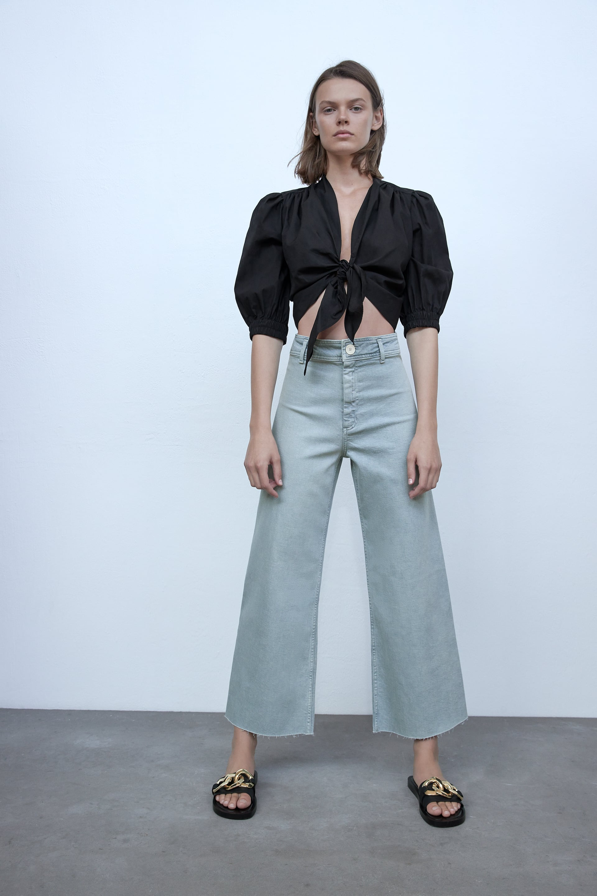

CROP WIDE LEG FRONT SEAM JEANS
High-rise jeans with a cropped wide-leg fit. Made from 100% OCS certified organically grown cotton for sustainability.Features front seam detail and washed effect.
Available in light blue, black, blue, and white.
Price: $65.90
Color: Light blue
Sizes: 25, 26, 27, 28, 29, 30, 31